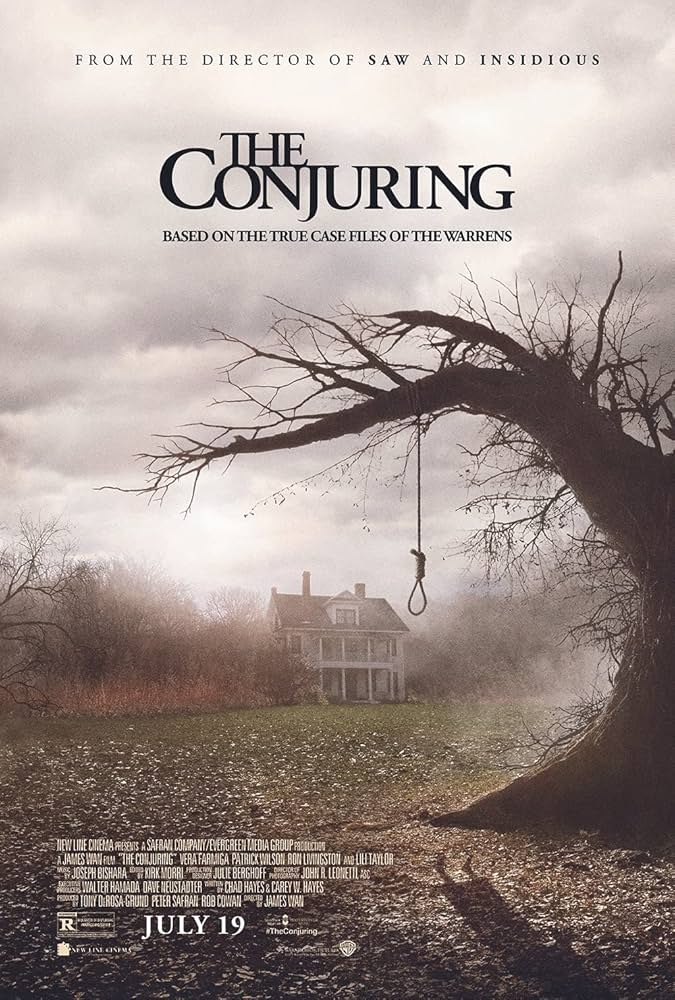

The Conjuring is a 2013 supernatural horror film directed by James Wan. Based on the real-life paranormal investigations of Ed and Lorraine Warren, the film follows the haunting of the Perron family in their Rhode Island farmhouse. As terrifying events unfold, the Warrens confront dark forces to help the family.